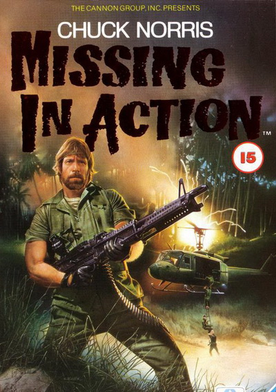

Genre: Mystery, Crime, Thriller, Horror
Release date: 22 october 2010
Short discription: Victims of Saws, the survivors in previous trials, to seek psychological help to fellow sufferers Bobby Dagen. But when his own dark secrets come to light, a new wave of terror is unleashed.
Genre: Action, Horror, Sci-Fi, Thriller
Release date: 21 October 2004
Short discription:During an archaeological expedition on Bouvetøya Island in Antarctica, a team of archaeologists and other scientists find themselves caught up in a battle between the two legends. Soon, the team realize that only one species can win.
Genre: Action , Sci-Fi
Release date: 22 May 2003
Short discription:Following the events , Neo and the rebel leaders estimate they have 72 hours until 250,000 probes discover Zion and destroy it and its inhabitants. Neo must decide how he can save Trinity from a dark fate in his dreams.

Genre: Action , Adventure , Drama
Release date: 16 November 1984
Short discription:Colonel Braddock launches a mission deep into the jungles of Vietnam to find the POW camp that he escaped from and free the Americans still held captive there.